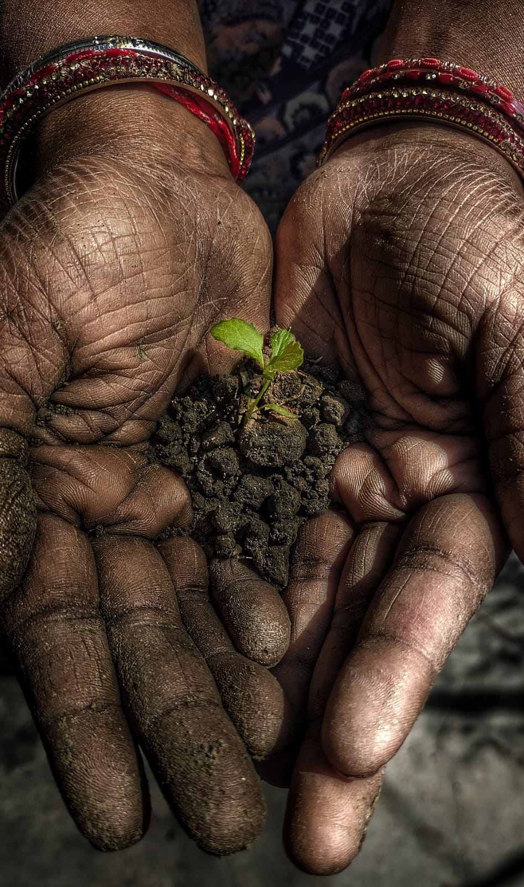
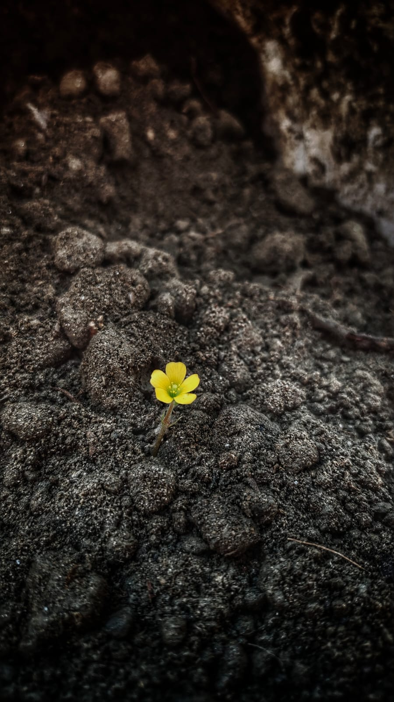

Waste is not
the end.
It's the beginning.
Renewing waste for clean energy. Our proposed New Delhi initiative aims to turn segregated organic waste into renewable biogas and organic fertilizers.

Recovering resources today for a more circular tomorrow.
Target production capacity*
Proposed project concept*
Intended collection radius*
What we throw away can help something grow.
Organic waste holds untapped value. Our proposed approach brings together responsible waste collection, renewable energy production, and soil-friendly organic fertilizers — keeping resources in use for longer.

A smarter journey from waste to worth.
Two useful outputs from one proposed resource-recovery system: upgraded biogas and organic fertilizer.
Gather organic waste
Kitchen waste, fruit and vegetable scraps, and cattle manure from suitable sources.
Prepare the feedstock
Segregation, shredding, blending and feedstock conditioning.
Recover biogas
Biological treatment through mesophilic anaerobic digestion.
Create usable outputs
Biogas upgrading and digestate processing through separate pathways.
Simplified conceptual workflow; final facility design and outputs depend on detailed engineering.
Rooted in New Delhi. Built for a cleaner future.
Planned for Ghitorni, the proposed compressed biogas facility aims to transform segregated organic waste into renewable gas while recovering valuable organic manure from digestate.